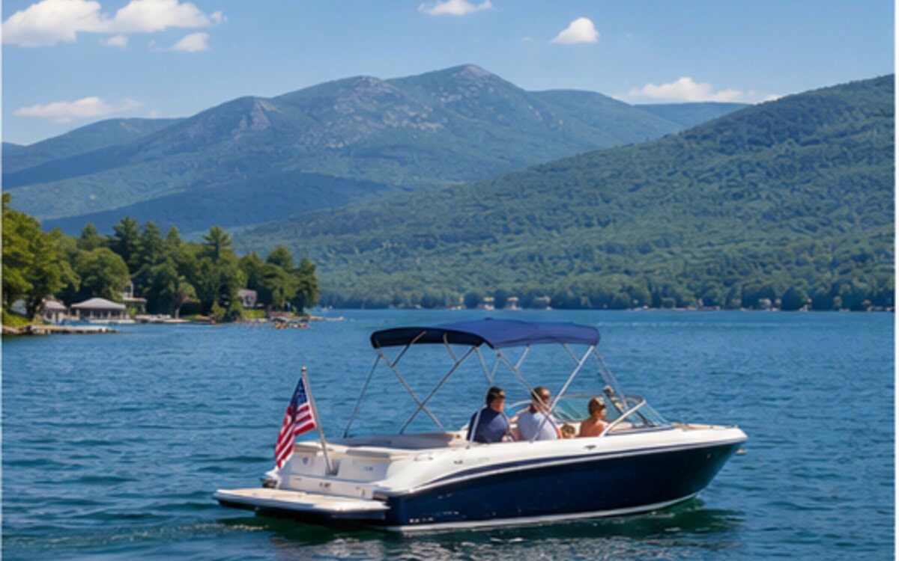
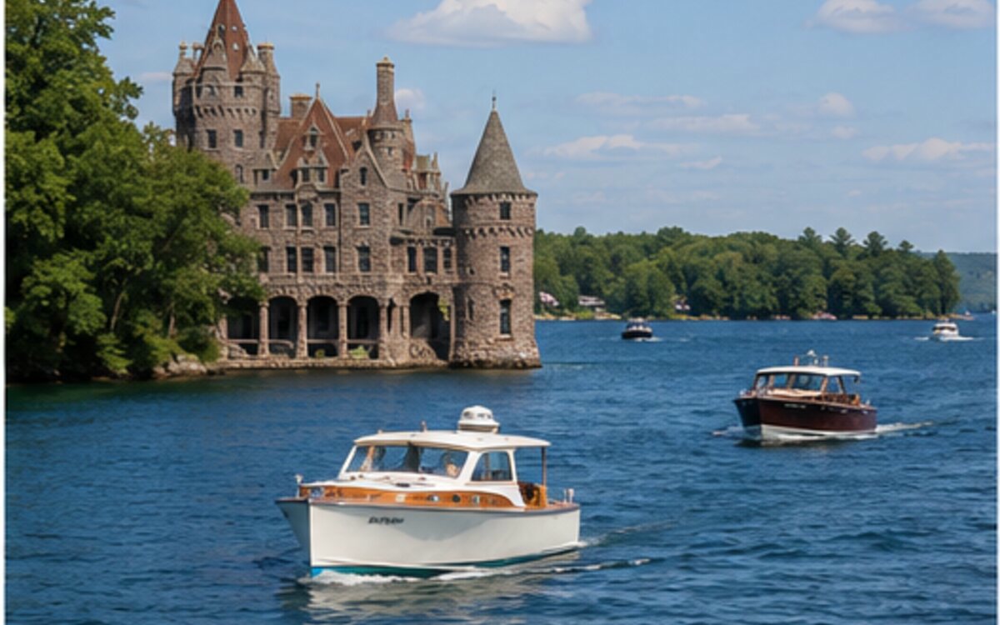
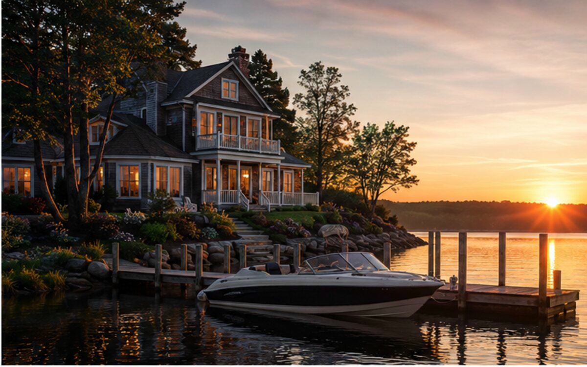

New York
Lake George
Mountain views, island camping, family attractions and excellent waterfront restaurants.
Open guideCurated boating destinations, waterfront weekends and practical local guides.
Each guide focuses on the parts that matter: launches, marinas, waterfront dining, family activities, lodging and the right gear for the trip.

Mountain views, island camping, family attractions and excellent waterfront restaurants.
Open guide
Historic castles, hidden coves and one of North America's great cruising regions.
Explore
Wine country, deep blue water and easy weekend routes from Central New York.
Explore